校园铃声管理大师说明书
一．基本功能介绍
双击校园铃声管理大师图标即可打开软件，即可显示以下界面，点击最小化，图标会显示在托盘中
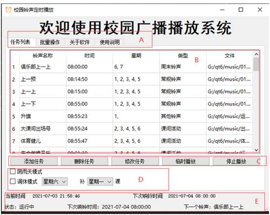
如上图界面可以大致分成5个区域：
A. 显示切换区，点击上面得切换按钮可以切换到人物列表，批量操作，关于软件，使用说明页面
B. 任务列表显示区域，每一行显示一个铃声的播放详情，包括铃声名，铃声播放时间，周几播放，铃声类型，和铃声的位置
C. 任务调整区，实现任务的添加，修改，删除，临时播放，停止播放功能
D. 模式选择区， 根据具体情况快速选择相应的模式
E. 状态显示区， 显示软件的运行状态，当前时间，下一个铃声的时间和名称
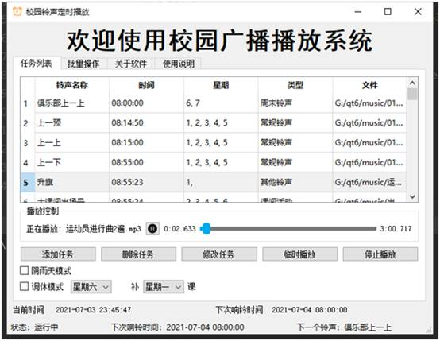
如上图， 当铃声播放时，任务列表下方会显示播放控制区，显示铃声的播放进度，可以暂停或者播放正在执行的铃声，可以通过拖动滑块调整音乐的播放进度，铃声播放结束或者点击停止播放后该区域会自动隐藏。
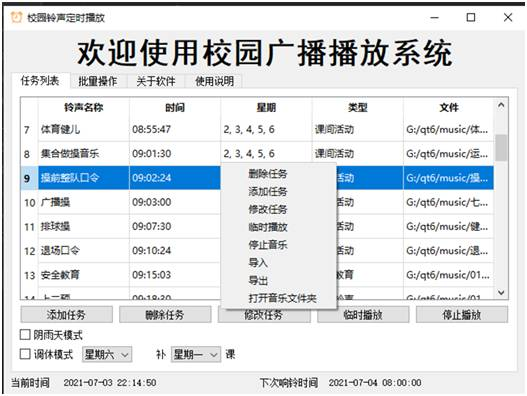
如上图，在任务列表显示区域任意处单击右键，可以调出快捷菜单，完成相应的功能。
二．添加任务
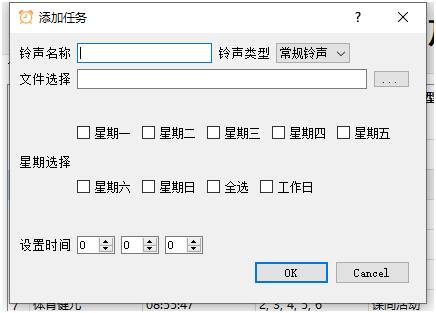
点击“添加任务”按钮或者右键快捷菜单按钮，可以调出上面的添加任务对话框，添加新的任务。
需要添加的内容有：
1. 铃声名称：为添加的铃声设置一个名称，如“第一节预备”。
2. 铃声的类型：有以下铃声类型可以选择
类型选择很重要，“阴雨模式”和“调休模式”的调整均依赖铃声类型，请设置铃声的时候注意。
3. 文件选择，点击右端带三个.的按钮，可以打开文件对话框，选择播放的音乐文件（文件必须为mp3模式，建议把所有的音乐文件都放在程序所在目录的music文件夹内）。
4. 星期选择: 通过以下
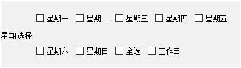
可以选择铃声执行的星期时间，“全选”可以选中周一至周日，“工作日”可以选中周一至周五。
5. 时间选择：
通过上面的输入框选择响铃的时，分，秒
注意：通一个时刻，只允许有一个铃声，时和分相同，秒数不同属于不同的时刻，所以如果想周一至周五8：00：00想一个铃声，而周六周日是另一个铃声，可以把周六和周日的铃声设置为8：00：01。
三．修改任务
选中需要修改铃声所在的行，点击“修改任务”按钮或者右键快捷菜单的“修改任务”按钮可以调出修改任务对话框
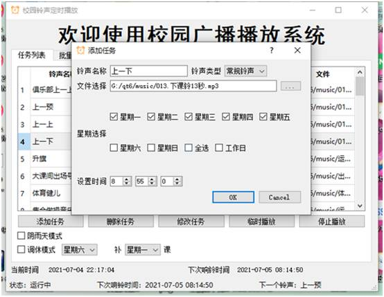
可以发现与添加任务的对话框基本相同，只是在对话框中的信息已经填写了要修改铃声的信息。修改的方法和添加任务基本一致。
四．删除任务
单击选中需要删除任务所在的行，点击“删除任务按钮”，或者快捷菜单的相应选项，可以删除任务，删除前会弹出对话框，点击是可以删除。
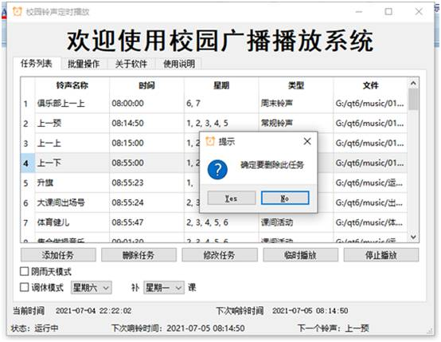
五．临时播放
如果临时需要播放任务列表中的某一个铃声，直接选中铃声所在的行，单击“临时播放”按钮或者右键快捷菜单的相应选项。该行的铃声会立即播放
注意：临时播放不会改变铃声原来的播放时间，相当与通过音乐播放器播放一遍音乐而已。
六．停止播放
如果想让正在播放的音乐立即停止，直接点击“停止播放按钮”或者快捷菜单的相应按钮。
七．模式调整
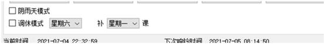
阴雨天模式：
阴雨天模式被打勾以后，课间活动的音乐将会被停止，会启动安全教育的铃声，取消勾选后，恢复正常模式。
调休模式：
如果遇到假期调休，可以通过勾选调整调休模式让周六、周日的铃声与其所补课的那天的铃声相同。取消勾选会恢复原来的状态。
八．批量修改音乐
使用场景：当需要改变所有的上课铃的音乐时，可以选择此功能
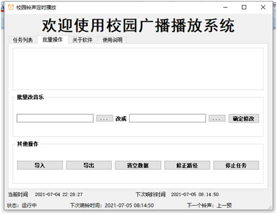
点击“批量改音乐”内左边的按钮会打开文件对话框，选择需要修改的铃声音乐，点击右边带…的按钮选择修改后的铃声。点击确定修改按钮，任务列表中所有的与左边相同的铃声都会被修改为右边的铃声。
九．导出
如果出现夏季或者冬季的铃声调整或者需要改为考试铃声，可以把原来的铃声导出保存，下次需要换会的时候再导入即可，点击“导出按钮”会打开导出文件对话框
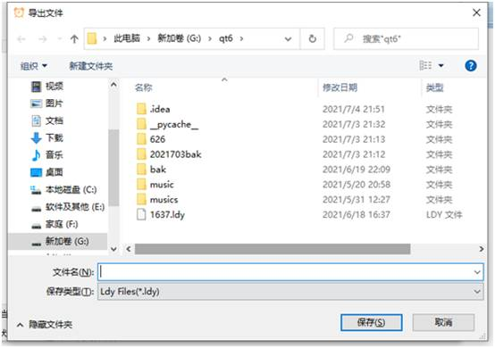
输入一个文件名，点击保存即可。
注意：保存的文件名为.ldy后缀名.
十．导入
点击“导入按钮”，可以打开导入对话框
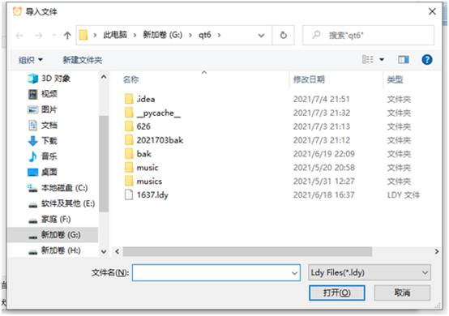
选择相应的.ldy文件即可。
注意：
1. 不要尝修改.ldy文件的内容再导入，导入前会验证导入文件是否合法，不合法会导致软件报错关闭。
2. 如果是从其他电脑导入的.ldy文件，请点击“其他操作”中的路径修正按钮，否则可能由于路径问题，导致原来的铃声不能播放。所有的铃声请放在程序所在目录的music文件夹内。
十一.停止任务：
如果不想铃声自动播放，请点击“停止任务”按钮，此时所有的定时铃声都不会播放，状态栏显示任务停止。按钮的名称会变成开始任务。点击“开始任务”按钮后，定时铃声会恢复。